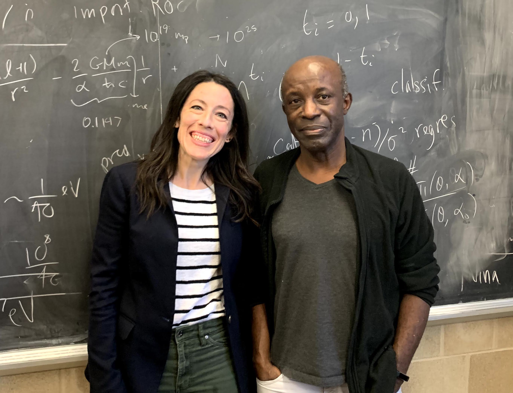

The Large Hadron Collider
The Large Hadron Collider (or LHC for short) is the world's largest particle accelerator.
It took more than 10,000 scientists and hundreds of universities and laboratories participating from more than 100 countries to build the accelerator, and around the same number continue to explore science at the facility today. The lab benefits from scientists coming from different lived experiences and backgrounds. In fact, the director of CERN, Dr. Fabiola Gianotti received a piano degree in Italy before moving to physics.
The rigor, the precision and the creativity that I learned from my music studies are as important as my physics studies in what I do today as a scientist. Music is with me every day.”
-Dr. Fabiola Gianotti, director general of CERN
 A tiny fraction of the people involved with a single experiment, the Compact Muon Solenoid (CMS), using the Large Hadron Collider.
A tiny fraction of the people involved with a single experiment, the Compact Muon Solenoid (CMS), using the Large Hadron Collider.
The Higgs boson was discovered at CERN in 2014. The discovery is officially attributed to over 7000 people, with even more involved in other roles such as engineering, computer science, and information technology.
...with the plausible hypothesis that the distribution of potential excellence in homo sapiens is, at least to a good approximation, independent of our biologically superficial differences of the members of that species. If so, it seems exceedingly shortsighted, and therefore, foolish for any human endeavor that requires excellence not to draw from as large a pool as possible. .. embrace diversity in order to make sure we embrace excellence wherever it resides. It is also the right thing to do.”
-Dr. Harrison B. Prosper. CMS Collaboration Chair at CERN.

Dr. Prosper also happens to be Dr. Kuchera's fabulous PhD advisor :) Photo from February 2020.The birth of the world-wide web
The need to share collective materials across the globe led Tim Burners-Lee, a CERN employee, to propose a new idea for information management, which he called the "world-wide web" in 1989.

This proposal was eventually accepted and led to the world's first website. And yes, this world-wide web is the same information system that you are reading this website on today. This invention is a fantastic example of how fundamental research can make an impact far beyond the directed field of study.
The misogyny of Dr. Alessandro Strumia
In 2018 (!!), physicist Dr. Strumia presented a "research-informed" talk at CERN's Workshop on High Energy Theory and Gender, stating that “physics was invented and built by men, it's not by invitation." Dr. Strumia used citation counts to declare that women are unfairly hired for scientific positions, even though there are studies across STEM indicating that there is demonstrated gender bias in citing papers. He also claims that there are fewer women in physics because the field is more suited to men, while evidence shows that gender bias and toxic cultures drive women away from physics. Dr. Strumia giving this talk (and publishing a paper on the work in 2021) to a group of international women physicists is an example on ways in which groups of people can be made to feel excluded in physics.
Richard Feynman
Richard Feynman developed Feynman diagrams, and won a Nobel Prize in 1965 for related work in quantum electrodynamics. He also developed an important model of weak decay with Dr. Murray Gell-Mann. He was recruited to work on the Manhattan project at age 24, where he worked on critical computations for the development of the atomic bomb. Dr. Feynman also played a notable role on the Rogers Commission to investigate the 1986 Challenger space disaster, determining that a faulty O-ring caused the accident.
However, along with being an impactful contributor to our understanding of particle physics, he is remembered for his persona, which ranged from infectious to problematic. He was gregarious, fun, while also remembered as full of himself, and sometimes even, well, a Dick.
Trickster
Dr. Feynman was a known trickster, and has recounted many stories of himself playing tricks on his colleagues. In the story below, he is exposing security flaws at Los Alamos National Laboratory during the development of the atomic bomb by sneaking into offices and exposing classified information.
So the meeting continues, and I sneak out and go down to see his desk drawer. OK? I don’t even have to pick the lock on the desk drawer. It turns out that if you put your hand in the back, underneath, you can pull out the paper like those toilet paper dispensers…. I emptied the whole damn drawer, put everything away to one side, and went back upstairs.
At the end of the meeting, Feynman suggested to Teller that the two of them should take a look to see if the older physicist’s desk drawer was secure. Teller guessed right away that Feynman had already broken into the desk. “The trouble with playing a trick on a highly intelligent man like Mr. Teller is that the time it takes him to figure [it] out, from the moment that he sees there is something wrong till he understands exactly what happened, is too damn small to give you any pleasure!” Feynman jokingly lamented.
Evidence of sexism
In one of his autobiographical books, Surely You're Joking, Mr. Feynman!, Dr. Feynman chooses to recount a story where he indicates that a woman is a "bitch" for not sleeping with him after he bought her sandwhiches. He inexplicably published this story around the age of 66 years old, long after the incident took place.
Reflection
Your personal reflection is an important component of your personal trajectory as a scientist. You will be graded only on completion, but please take the time to sincerely reflect on the following questions. I will use the collective responses to help me design better materials in the future.
- What are some interesting takeways to you from this reading?
- How do these anecdotes show examples of bias in the field of particle physics?
- How do you think these incidents might affect the quality of the science that is done?
- Do you think bias should be adressed on a personal level or on a systemic level?